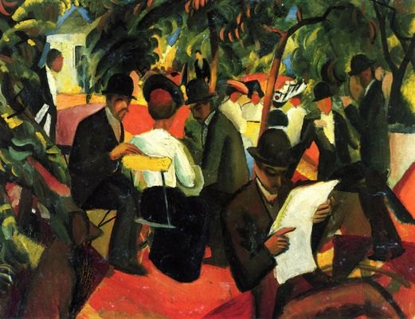
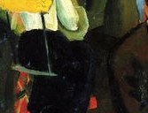
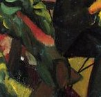
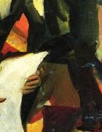
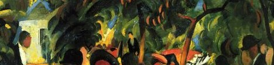
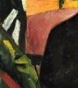
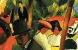
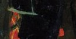
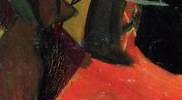

1912 年，奥古斯特·马克画下一家开在公园里的餐厅：树影斑驳，人们坐在桌边闲谈，一位白衣侍者穿梭其间。没有沉重的主题，只有一个被阳光和色彩浸透的、轻盈的午后。马克只活了 27 岁，却把「现代生活的明亮」画到了极致。
树是绿的，桌布是白的，连影子都被涂成了彩色。
人物被简化成色块与轮廓，没有一张脸需要你辨认——他们只是「悠闲」本身。
马克把印象派的光、野兽派的色、奥费主义的几何，揉进同一个公园。
—— 画面解读 · 通行说法
马克画下的，是现代人难得的「无所事事的快乐」。
画面没有焦点人物，却处处是细节：斑驳的树影、白色的桌布、阳伞下的侧脸。马克用色彩的节奏，组织了这场公园里的闲暇。

点击画面中的 ✦ 光点 细看每一处 · 图片来源：Wikimedia Commons（公有领域）
从巴黎的橱窗到突尼斯的色彩，再到一战前最后一个夏天——马克用极短的生涯，把「现代生活的明亮」定格。
1912 · 巴黎与奥费主义
马克深受法国奥费主义（Orphism）影响，学会把光与色拆成纯粹的几何色块。公园餐厅里那些斑驳的树影，就是这种「光的几何」。
➤1914 · 突尼斯
1914 年初，马克与克利、莫伊兰德游历突尼斯，被北非的光与色彻底点燃。回国后他的画面更亮、更纯——可惜这束光只亮了几个月。
➤1914 · 佩尔特
1914 年 8 月，一战爆发，马克应征入伍，数周后于法国佩尔特阵亡，年仅 27 岁。那个被他画得无比明亮的现代生活，戛然而止。

奥古斯特·马克（1887–1914）是德国表现主义里最明亮的一支。他不像马尔克那样沉入精神，而是把目光投向街角、商店、公园与现代人的闲暇。
他博采众长：印象派的光、野兽派的色、立体与奥费主义的几何，被他调成一种和谐的、轻盈的语言——被视为对桥社那种激烈表现的一种温柔反平衡。
他的好友弗兰茨·马尔克在 1916 年同样死于战场。两位蓝骑士的核心，都没能活过战争。
今天回看《公园餐厅》，我们看到的不只是一次午后闲坐，更是一个被战争截断的、关于「明亮现代生活」的梦。
※ 马克 1914 年突尼斯之行与同年阵亡，是理解其晚期色彩爆发的关键（见其书信与友人回忆）。
马克没有让任何一处「写实」。树、人、桌、影，都被还原成颜色的节奏——这正是他对现代生活的礼赞。

暖色阳伞下的柔和色块。
白桌布散落如音符。

白在斑斓中最跳脱。

细碎光斑罩住餐厅。

收拢一团暖黄。

把私密放进更大世界。

让暖色有停处。

地也成了颜色。
马克与马尔克、康定斯基同属蓝骑士圈，但他更关心市井与现代生活。他的明亮，是蓝骑士里相对轻盈的一脉。
马克把法国先锋的色彩与几何揉进德国表现主义，形成一种和谐、明快的个人语言，被视为对桥社激烈风格的反平衡。
马克 1914 年阵亡，年仅 27 岁；马尔克 1916 年阵亡。蓝骑士两颗最亮的星，都没能活过第一次世界大战。
《公园餐厅》今藏瑞士伯尔尼艺术博物馆；马克作品亦散见波恩、埃森、明斯特等地，是德国现代艺术的重要坐标。
《公园餐厅》完成，马克把现代人的闲暇与公园的光，定格成最明亮的一帧。
年初的突尼斯之行点燃了他晚期的色彩爆发；同年 8 月应征入伍，数周后阵亡，27 岁的生涯落幕。
挚友马尔克亦战死凡尔登。蓝骑士最核心的两位，都倒在了战场上。
《公园餐厅》与马克的其他作品一道，成为德国现代艺术的重要坐标；那个明亮的午后，仍在伯尔尼的墙上继续。